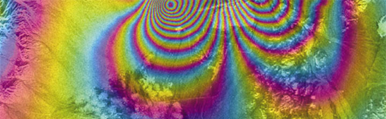
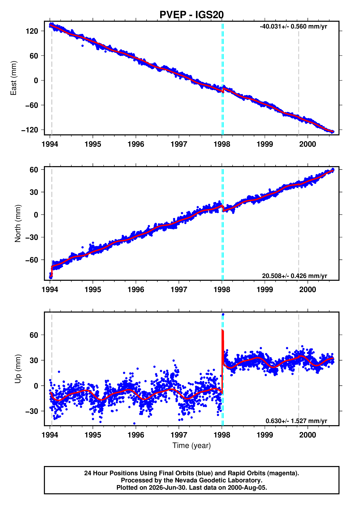

How I measure the ground
Three complementary sensor types, each strong where the others fall short: spatial coverage, absolute precision, and surface detail. Fused together and driven by machine learning, they form one scalable Earth observation system rather than three separate tools.

Regional scale
InSAR
Millions of measurement points across a 250 km swath, resolving millimetre-scale motion from satellite radar.
How it works →

Geodetic precision
GNSS
Continuous, absolute position at fixed stations. The ground truth that ties the radar to the real world.
How it works →

Dense coverage
LiDAR
High-resolution elevation from laser returns, providing the fine surface detail needed to underpin and interpret the deformation.
How it works →